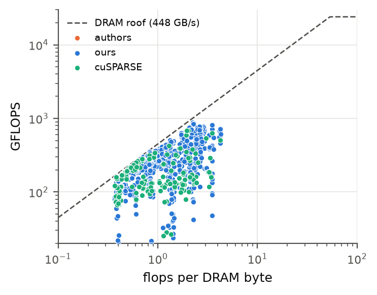
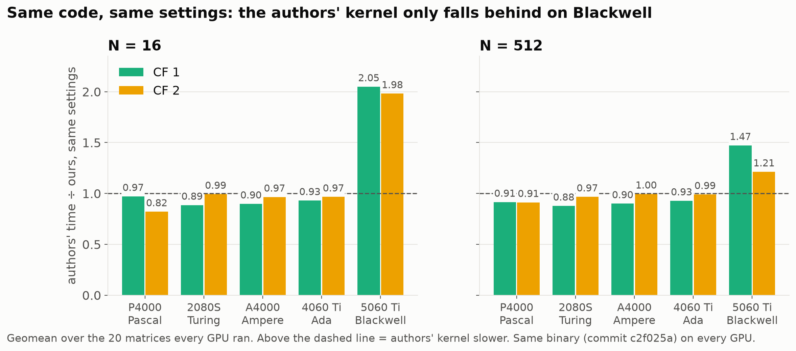
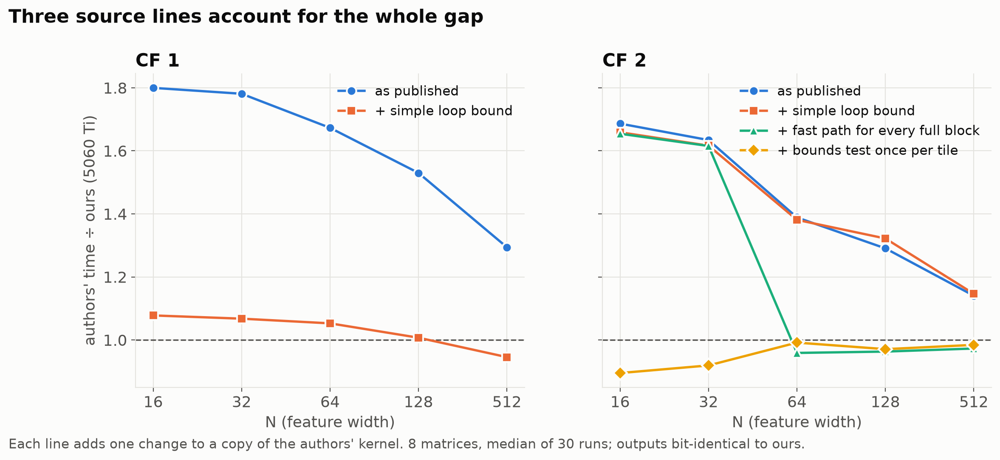
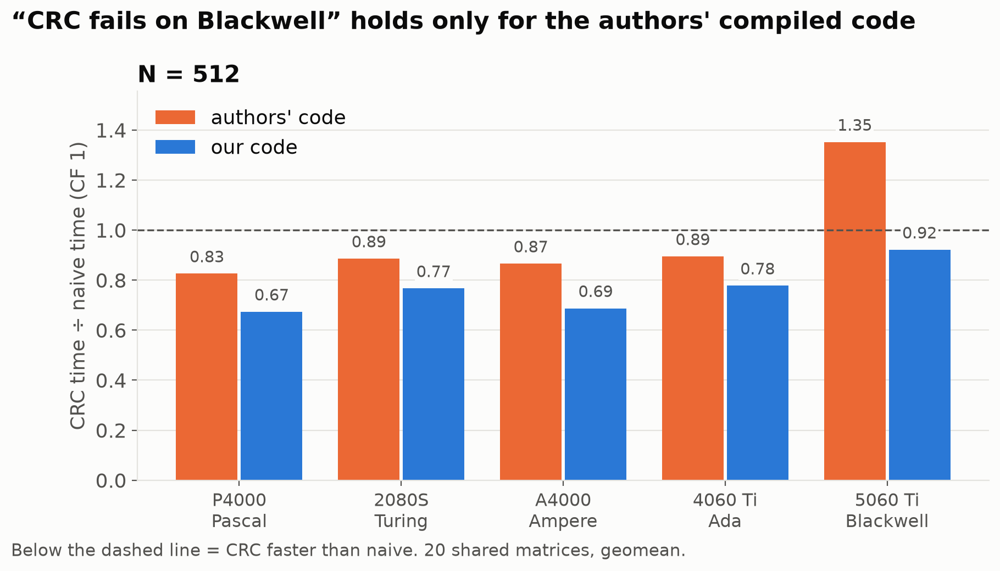
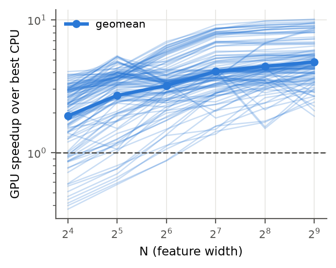
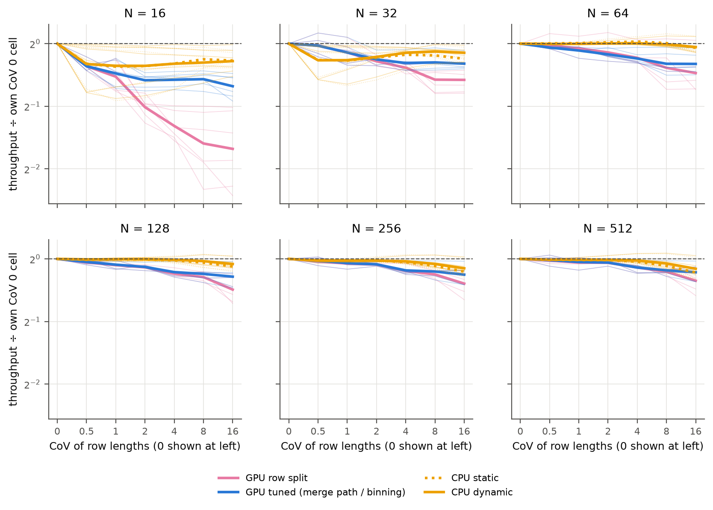

Reproduce a paperMake it fasterCUDA · OpenMP · NCSU ARC
PROBLEM · The task
The problem: multiply a sparse matrix by a dense matrix (SpMM) (1/2)
Sparse matrixMostly zeros, so only nonzeros are storedCompressed Sparse Row (CSR) = three arrays: where each row starts, the column numbers, the values.
SpMVSparse matrix × vector: y = A·xThe kernel of HW1–HW4.
SpMMSparse × dense matrix: C = A·BB has N columns, N = 16 to 512.
CSR example: a 4 × 4 matrix with 7 nonzeros. Row 2 is rowPtr entries 3 to 6.
SEEN IN HW1–HW4the same CSR format and y = A·x kernel. SpMM is N SpMVs that share one A.
PROBLEM · The task
The problem: multiply a sparse matrix by a dense matrix (SpMM) (2/2)
Why it mattersOne layer of a graph neural network (GNN) is an SpMMEach node sums its neighbours' feature vectors. Per the paper and our proposal, it is 30–40% of GCN (graph convolutional network) training time.
PROBLEM · Why it is hard
What makes it hard: irregular reads and uneven rows
Irregular readsWhich rows of B are read depends on the graphSo reads jump around memory.
Uneven rowsA few rows hold a large share of the nonzerosMeasured by the coefficient of variation (CoV) = standard deviation of row length ÷ mean row length.
SEEN IN HW3the row-length spread (roadNet-CA vs pkustk14) decided which SpMV kernel won.
PROBLEM · Roofline
Roofline: why SpMM is limited by memory, not arithmetic (1/2)
Step 1 · count the workEach nonzero a(i,k) and each output column j costs 1 multiply + 1 add = 2 flops, and needs one float of B = 4 bytes. (A's column number and value, 8 bytes, are shared by all N columns of the row.)
Step 2 · arithmetic intensityflops ÷ bytes = 2 ÷ 4 = 0.5 flop/byteif every B read comes from DRAM. Caches can raise it; we measured a median of 1.22 (1,095 profiled runs, F14).
Step 3 · the machineThe RTX 5060 Ti can do about 24 TFLOP/s (36 streaming multiprocessors (SMs) × 128 lanes × 2 × 2.6 GHz) but reads only 448 GB/s. Ridge point = 24,000 ÷ 448 ≈ 54 flop/byteBelow that, memory sets the speed.
Step 4 · the verdict1.22 is about 44× below 54, so SpMM is memory-bound. Best possible = bandwidth × intensity. Measured median 238 GB/s, best 423 GB/s = 94% of peak; the most common stall is "waiting on a memory load" (long scoreboard, F15). We use under 3% of the arithmetic.
SoEvery optimization in this talk is about moving fewer bytes, from closer memory, or keeping more of the GPU busy, not about doing less math.
PROBLEM · Roofline
Roofline: why SpMM is limited by memory, not arithmetic (2/2)

F14: each dot is one measured run (Nsight Compute). Dashed line: the most any kernel can do at 448 GB/s.
CPU rooflineNot measured yetNo STREAM run on the EPYC 9115 yet. It is a Dec 7 item.
SEEN IN HW1–HW3 and the midtermSpMV sat at 0.17 flop/byte (memory-bound); GEMM reached 84% of compute peak (compute-bound). SpMM sits between them, still on the memory side.
PAPER · GE-SpMM, Huang et al., SC 2020
The paper's starting kernel: one warp per row
What a warp does32 GPU threads that run the same instruction togetherOne warp per sparse row; thread j computes output column j.
The wasteAll 32 threads load the same nonzeroOne useful value per request, while their B reads are combined into one request ("coalesced": 32 neighbouring floats).
SEEN IN HW3this is HW3's vector kernel (one warp per row), turned sideways: the 32 threads cover 32 columns of B instead of 32 nonzeros.
PAPER · Trick 1
The paper's two tricks, and its claim (1/2)
CRC · Coalesced Row CachingLoad 32 nonzeros once, then reuse themThe warp loads 32 nonzeros in one coalesced read into shared memory (fast memory on the chip), then all threads reuse them.
SEEN IN the midtermCRC is tiling (copy reused data into fast memory).
PAPER · Trick 2 and the claim
The paper's two tricks, and its claim (2/2)
CWM · Coarse-grained Warp MergingOne warp, CF groups of columnsOne warp computes CF groups of columns (CF = coarsening factor), so each loaded nonzero is used CF times. The paper fixes CF = 2 and 8 rows per block for every matrix.
The paper's claim1.37–1.43× faster than NVIDIA's cuSPARSE library (old csrmm2 routine) on GTX 1080 Ti (Pascal) and RTX 2080 (Turing). No CPU comparison.
SEEN IN the midtermCWM is register blocking (our 6×16 GEMM micro-kernel kept a block of C in 12 registers).
SETUP · Our project
Our project: two tracks (from the proposal), one shared sweep (1/2)
GPU track · Pradyumna
Reproduce GE-SpMM
Replace the deprecated csrmm2 baseline with all algorithms of the current cusparseSpMM
Tune CF and tile sizes per matrix
Turn on the read-only cache hints the original left disabled
Phase 3 added load balancing (merge path) and an automatic settings picker
CPU versions of both GPU tricks: cache blocking over N (for CRC); a static / dynamic / guided scheduling sweep (for CWM's load-balancing role); SIMD
Benchmarked against Intel MKL (Math Kernel Library)
Shared by both tracksA matrix generator with density (nonzeros per row 4–128) and skew (CoV) as separate knobs · the paper's 67 graphs (64 SNAP + Cora, Citeseer, Pubmed) · 118 matrices in all · one sweep over N = 16 to 512.
SETUP · Hypotheses and machines
Our project: two tracks (from the proposal), one shared sweep (2/2)
H1CRC pays only once rows fill its 32-slot tile
H2The best CF falls as skew rises
H3The skew penalty is GPU-specific (CPU control with dynamic scheduling)
H4The CPU narrows the gap at small N
Hypotheses from the proposal. Phase 3 added H5–H8 (results on slide 34).
GPU
RTX 5060 Ti
Blackwell, 36 SMs, 448 GB/s, 32 MB L2
CPU
AMD EPYC 9115
16 cores
Cluster, toolkit
NCSU ARC
CUDA 12.9
Widths
N = 16 to 512
every run checked against a double-precision reference
Correctness, noise
0 wrong results
median run-to-run variation 0.07% (F17)
SEEN IN HW1–HW4every run checked against a sequential baseline before it counts.
GPU TRACK · Reproduction
Reproduction: the paper's published kernel no longer wins on a 2025 GPU
0.95×Authors' code, unchanged (CF 2) vs best cuSPARSE, N = 512Oct run, 104 matrices; T1. The paper reported 1.37–1.43× (against the older routine).
On older GPUs, the same binary still wins (Oct run, same 18 matrices; T7)
1.18×P4000
1.10×2080 SUPER
1.09×A4000
1.26×4060 Ti
Speedup over best cuSPARSE by N, geometric mean (Oct run)
The puzzle (sets up the next slide)Our own implementation of the same algorithm at the same settings is up to 2× faster on the 5060 Ti, yet just as fast as theirs on every older GPU.
GPU TRACK · Investigation
Why the paper's kernel lost on Blackwell: the compiler, not the hardware (1/2)
1 · Symptom

Same algorithm, same settings (CF 1 or 2, 8 rows per block, plain loads), same binary on every GPU. Authors' time ÷ ours, 20 matrices: older GPUs 0.82–1.00 (theirs is equal or up to 18% faster); 5060 Ti 2.05 / 1.98 at N = 16 and 1.47 / 1.21 at N = 512 (CF 1 / CF 2).
Why the paper's kernel lost on Blackwell: the compiler, not the hardware (2/2)
3 · Cause, in the machine code (same nvcc 12.9 build, load instructions counted at both compiler stages)
kernel
PTX sm_89
PTX sm_120
SASS sm_89
SASS sm_120
authors' CF 1
20
8
68
8
authors' CF 2
34
10
82
10
ours CF 1
12
12
12
36
ours CF 2
19
19
19
19
For Pascal–Ada the compiler unrolls the authors' loop; for Blackwell its front end leaves it rolled, and the back end cannot unroll a loop with two exits. Not unrolled means one B load in flight per warp, so every nonzero pays a full memory latency of several hundred cycles. Ours: unrolled, 8 loads in flight.
Why skewed graphs suffer mostOne warp walks a long row one latency per nonzero. CF 1, N = 16: wiki-Talk and com-Youtube 4.2× slower, roadNet-CA (rows of 1–4) only 1.03×.
SEEN IN lecture (GPU sessions) and HW3a GPU hides memory latency only when independent work is in flight. Here each warp had one load in flight.
We have not traced which compiler heuristic changed for sm_120; the PTX counts show it is the front end's per-architecture unrolling decision. PTX = NVIDIA's intermediate code; SASS = the GPU's machine code.
GPU TRACK · The cause, in source
Three source lines account for the whole gap (1/2)
"Am I the last block?" instead of "do I stick out past N?": at CF 2 the slow checked path runs in every block at N ≤ 64, half at 128, an eighth at 512.
3
if (nout>0) { acc1 += val*B_dnVal[offset]; }
if (nout>1) { acc2 += val*B_dnVal[offset+32]; }
legacy_kernels.cuh:184–189
if (full || col0 + SUB * VEC * c < N)
fma_vec(acc + c * VEC, a, load<LDG>(…));
gespmm.cuh:248–251
A real branch per nonzero; a load can't move above its guard, so loads go out one at a time (ours compiles to predicated loads).
The fix was tested in tools/legacy_ablation.cu. Diffs from codegen_gap.md ("Slide 4a").
SEEN IN the midtermunrolling the k loop by 4 cut instructions per flop from 1.04 to 0.56, a 1.65× gain. Loop structure decides what the compiler can do.
GPU TRACK · Each fix, measured
Three source lines account for the whole gap (2/2)

5060 Ti, 8 matrices, median of 30 runs; authors' time ÷ ours. Every variant's output is bit-identical to ours. __restrict__ changes nothing (≤ 0.3%).
Authors' ÷ ours, N = 16 → 512
Ratio
CF 1 as published
1.80 → 1.29
+ fix 1
1.08 → 0.95
CF 2 as published
1.69 → 1.14
+ fixes 1 and 2
1.65 / 1.62 at N = 16 / 32; 0.96–0.97 at N ≥ 64
+ fix 3
0.90 / 0.92 at N = 16 / 32
Proof that it is the compiler: on the 4060 Ti (Ada, also 32 MB L2), fix 1 changes nothing (0.91–0.95× before and after): the loop was already unrolled there (68 loads either way).
Consequence: with the loop fixed, the paper's CF 2 in our code reaches 1.14× over best cuSPARSE on the 5060 Ti, inside the older GPUs' 1.09–1.25×. The algorithm still works on Blackwell; its published binary, compiled for Blackwell, does not.
Our October explanation is withdrawn: we had blamed the larger cache for doing CRC's job. The counters on slide 13 show identical bytes and hit rates.
TakeawayRe-running a paper's code on new hardware measures the compiler as much as the algorithm. Check the machine code before blaming the hardware.
Caveats: CF 4 / 8 not measured; the paper's original nvcc not tested.
GPU TRACK · Trick 1 on new hardware
What the new hardware did change: CRC helps less, and coarsening hits the L2 (1/2)

Trick 1, CRC, measured on our code (CRC time ÷ naive time, CF 1, N = 512, 20 matrices):
GPU
CRC ÷ naive
P4000
0.67
2080 SUPER
0.77
A4000
0.69
4060 Ti
0.78
5060 Ti
0.92
CRC still wins on Blackwell, but by 8% instead of 22–33%. This is the real hardware effect. (The authors' binary shows 1.35 on the 5060 Ti only because of slides 13–16.)
SEEN IN the midterman L1-sized tile cut misses 16× but ran slower (17.6 vs 24.5 GFLOP/s) because it added instructions; tiles bigger than L2 lost 10–15%. These are the same two effects as CRC's shrinking win and CF's L2 spill.
SEEN IN HW2dynamic scheduling flattened the imbalance but lost to plain static when the matrix fit in L3. The fix's overhead outweighed the problem.
GPU TRACK · Trick 2 on new hardware
What the new hardware did change: CRC helps less, and coarsening hits the L2 (2/2)
Trick 2, CWM (coarsening, CF), in plain steps:
1 · What it fixesWith CF = 1, each group of 32 columns loads the sparse row again; CF = 2 loads it once for two groups.
2 · What it costsEach warp covers CF× more columns of B at once, so the part of B in use (the "column slice") is CF× wider.
3 · What we measuredOne 65,536-row graph, N = 512 (traffic model matches the hardware counters exactly on 590 of 608 calls, F23). Slice 8 MB at CF 1 fits in the 32 MB L2 → 158 MB from DRAM; CF 2 → 180 MB; CF 4 → 454 MB; CF 8 → slice 67 MB, does not fit → 847 MB.
4 · ResultFewer sparse-row loads, but B spills out of L2 and is re-read from DRAM. Best CF over 705 (matrix, N) cases: CF 1 ×378, CF 2 ×317, CF 4 ×7, CF 8 ×3 (Nov run, F3).
TakeawayA trick removes one cost and adds another. Whether it pays depends on the machine, so measure it per machine and per matrix, never fix it once.
GPU TRACK · Our method 1
Our method 1: re-implement, then tune per matrix
One templated kernel with the paper's algorithm; every fixed choice becomes a measured knob: CF {1, 2, 4, 8} · rows per block {1–16} · load width (1, 2 or 4 floats per load) · read-only cache path · rows sorted by length ("swizzle") · long-row split · 2–4 short rows per warp ("sub-warp rows") · 64-bit offsets.
Step 1 · correct code generationOur loop is unrolled on every GPU (slides 13–16). On the 5060 Ti that alone is worth 1.21–2.05× over the published binary at identical settings. Already measured and small: wider loads 1.028×, read-only path 1.011× (F12).
Step 2 · per-matrix tuningvs the paper's fixed CF 2 / 8 rows per block, both in our code: 1.81× geomean, max 20.9× (Nov run, F11).
SEEN IN HW2the best schedule and chunk size depended on the matrix. Here the best kernel settings do too.
Gain ladder
What each optional knob adds
GPU TRACK · Our method 2
Our method 2: the longest-row problem, from CSR to COO to merge path (1/3)
The pattern we keep meeting: CSR groups nonzeros by row, so the natural unit of work is a row. Whoever gets the long rows finishes last.
Where
How work was split
What we measured
HW1 (MPI)
contiguous row blocks per rank
nonzero imbalance (max ÷ average) 2.89 on dictionary28 and 1.92 on D6-6 at p = 16; these two had the lowest efficiency, and better communication could not fix it
HW2 (OpenMP)
static row split per thread
imbalance 1.64 on Ga3As3H12 (P = 8); splitting by nonzeros was the fastest CSR setting, 32–41% less time than static (P = 16)
GPU, ours
one warp per row
wiki-Talk, N = 128: 14.8 ms, 85% of it a tail with most SMs idle; one row has 100,022 nonzeros (F24b)
COO · coordinate format (from HW1)A flat list of (row, column, value)Cutting that list into equal pieces gives every worker the same number of nonzeros, so no worker owns "the long row". The price: one row index stored per nonzero. In HW1, CSR took 0.67–0.94× of COO's memory.
F24b: wiki-Talk timeline.
GPU TRACK · Our method 2
Our method 2: the longest-row problem, from CSR to COO to merge path (2/3)
Merge path (Merrill & Garland, SC 2016) = COO's even split on CSR's storageTreat rows + nonzeros as one work list, cut it into equal pieces, and use CSR's row starts (a binary search) to find where each piece begins. No extra row array. A row cut across pieces is finished by the last warp to arrive, adding the pieces in a fixed order, so the answer is bit-identical every run (costs a median 1–4% vs atomic adds, D-166).
GPU TRACK · Our method 2
Our method 2: the longest-row problem, from CSR to COO to merge path (3/3)
14.8 → 8.5 mswiki-Talk, 0% tail
1.72×59 uneven matrices (CoV ≥ 2), at N = 161.26× at N = 32; about 1.0× at N = 64–256; 0.94× at N = 512
0.73–0.80×even matrices (CoV < 1)it loses, so it is a choice, not a default (F30)
GPU TRACK · Our method 3
Our method 3: pick the settings for a new graph automatically
How `auto` decidesauto = a simple rule decides merge path vs row split; for row split, a 3-nearest-neighbour model picks among 6 configs from features of the matrix.
1.14×faster than best cuSPARSEEquivalent, on 27 matrices it never saw (Nov run, F13). Choosing costs 0.23 ms, once per graph.
SEEN IN HW1the sparse communication plan was built once in setup and paid back over many calls. The choice here is also made once per graph.
Held-out test, 27 unseen matrices: fraction of the best possible speed
1 = the best configuration we measured for that matrix and width.
GPU TRACK · Results
GPU results: faster than NVIDIA's library at every width
Tuned vs best cuSPARSE (Nov run, T1)
1.58×N = 512faster on 110 of 115 matrices, 2 ties, 3 slower
1.51×N = 16
Reading the chartRow split alone: 1.13× (N = 16) and 1.53× (N = 512). Adding merge path and sub-warp rows: 1.51× and 1.58×. Load balancing carries the small-N gain; tuning carries the large-N gain.
Row-split-only results are shown at N = 16 and N = 512, the two widths given for it.
GPU TRACK · Same code, newer GPU
Same code, newer GPU: 1.66× faster. What caused it? (1/2)
Drawn to the same scale: one square = one SM (streaming multiprocessor); L2 box area is proportional to capacity. Specs are published values plus our measured clock.
Source for slides 25–26: computed from results/raw X1, X2 (5060 Ti) and X13_rtx2080super, X13a_rtx2080super by analysis/gen_compare.py (its output is saved next to it).
RTX 2080 SUPER (Turing)
RTX 5060 Ti (Blackwell)
SMs / FP32 lanes
48 / 3,072
36 / 4,608
L1 + shared memory per SM
96 KB
128 KB
L2 cache
4 MB
32 MB (8×)
DRAM bandwidth
496 GB/s (GDDR6, 256-bit)
448 GB/s (GDDR7, 128-bit), 10% less
SM clock, measured in our runs (median)
1,890 MHz
2,727 MHz (1.44×)
FP32 peak
≈ 11 TFLOP/s
≈ 24 TFLOP/s
GPU TRACK · Same code, newer GPU
Same code, newer GPU: 1.66× faster. What caused it? (2/2)
1.66×our kernel, faster on the 5060 Ti same 20 matrices, N = 16–512 (118 cases), best of the same 140 kernel configurations on each GPU
1.61×cuSPARSE, faster on the 5060 Ti
1.01×the authors' published binary its loop is not unrolled for Blackwell (slides 13–16), which cancels the hardware gain
Cause 1, not bandwidth: 10% less DRAM bandwidth, yet faster. Effective bandwidth (minimum bytes the kernel must move ÷ time, median): 150 GB/s on the 2080 SUPER vs 221 GB/s on the 5060 Ti.
Cause 2, the 8× larger L2 (the main one): the gain is largest where B fits in 32 MB but not in 4 MB. There, the 2080 SUPER re-reads B from DRAM and the 5060 Ti serves it from L2. cuSPARSE shows the same pattern, so this comes from the hardware, not from our code.
Cause 3, not isolated: where B fits in both L2s the 5060 Ti is still 1.25× faster, 1.55× when it fits in neither. The 1.44× higher SM clock is a likely contributor, but we did not separate it.
Speedup 5060 Ti ÷ 2080 SUPER by size of B, and effective GB/s (2080 SUPER → 5060 Ti)
TakeawayFor a memory-bound kernel, a bigger cache can beat more bandwidth: the 5060 Ti has less DRAM bandwidth than the 2080 SUPER but runs 2.26× faster when the data fits its L2.
SEEN IN HW1efficiency went above 1.0 at p = 16 for dictionary28 and roadNet-CA, which we attributed to each rank's slice of the data starting to fit in the 16 MB L3. Seen in the midterm: one GEMM tile ran at 25.4 GFLOP/s while B fit in L3, and at 7.0 once it did not.
Oct run kernels (before merge path); 140 shared configurations; L2 capacity inferred from the B-size split, since the 2080 SUPER was not profiled.
GPU TRACK · Did the hardware give us the gain?
Did the newer hardware give us our gain over cuSPARSE and the paper? (1/2)
No. Three measured reasons:
1Every comparison runs both kernels on the same GPU.
2The 5060 Ti has no more memory bandwidth than the paper's GPUs: 448 GB/s vs 484 GB/s (GTX 1080 Ti) and 448 GB/s (RTX 2080), published specs. For a memory-bound kernel (slide 5), bandwidth is the ceiling.
3At identical settings, the authors' code is as fast as ours on all four older GPUs (0.82–1.00×). The 5060 Ti gap is code generation (slides 13–16), not the chip.
Where our 1.58× over cuSPARSE comes fromThe gain ladder (slide 19): 1. unrolled code (fixes the published binary's Blackwell slowdown) 2. per-matrix tuning 1.81× 3. load balancing (merge path, sub-warp rows) for small N
What the hardware did changeEverything got about 1.6× faster (slide 25), cuSPARSE included, so it cancels out of our same-GPU ratios. CRC's benefit shrank from 22–33% to 8% (slide 17), and the best CF is mostly 1.
GPU TRACK · Did the hardware give us the gain?
Did the newer hardware give us our gain over cuSPARSE and the paper? (2/2)
Speedup over best cuSPARSE at N = 512, on the 18 matrices every GPU ran (older GPUs: Oct run)
Corrected caption (D-182): the authors' 5060 Ti bar measures their compiled loop (slides 13–16); it is not a hardware effect.
CPU TRACK · Design
CPU track: the OpenMP design and what each piece bought (1/2)
No conflictsEach thread owns whole output rowsRow-parallel CSR SpMM: no write conflicts and no locks.
4 accumulatorsAdditions don't wait on each otherPer row: 4 independent accumulators.
AVX-512Vectors along NAVX-512 vectors along N.
+pk4Short rows packed 4 at a time
CPU TRACK · What each piece bought
CPU track: the OpenMP design and what each piece bought (2/2)
CPU versions of the GPU tricks, measured (Nov run, 16 threads, N = 512, T3):
Piece
Result
Verdict
Cache blocking over N (the CRC analogue)
0.86× of plain row-parallel
not used
SIMD width
AVX2 0.98× and scalar 0.43× of AVX-512
AVX-512 kept
Short-row packing
23–29% faster at N = 16 / 32 (D-179)
kept
Schedule in the scaling runs
dynamic, chunk 64 (F9)
used
SEEN IN HW2the same OpenMP schedule sweep and the same SIMD lesson. Memory-bound code gains little from wider vectors (AVX2 ≈ AVX-512 here).
CPU TRACK · Results
CPU results: scaling, vs MKL, and vs the GPU
6.7×16 threads vs 1, geomean (T3)Amdahl serial fraction 0.03–0.19 by matrix (F9)
0.77×MKL vs ours at N = 512 (T3)At N = 16, MKL is still 1.10× faster; we are faster from N = 32 (D-180)
1.9× → 4.8×GPU vs our best CPU code (H4), N = 16 → 512 (F8)The CPU is closest at small N, as H4 predicted.
F9: CPU strong scaling

F8: GPU vs CPU by N
SEEN IN HW2strong scaling and Amdahl's serial fraction, same method.
BOTH TRACKS · Skew (H3)
Skew: does it hurt the GPU more than the CPU? (H3)

F33: same generated matrices on both.
Throughput at CoV 16 relative to each one's own CoV 0 (F33):
N = 512
N = 16
GPU row split
0.79
0.31
GPU tuned with merge path
0.86
0.62
CPU dynamic
0.90
0.82
ResultH3 holds at every N: the one-row-per-warp GPU mapping is hurt more by skew than the CPU. Merge path recovers 35–71% of that gap (F33).
BOTH TRACKS · PyTorch
End to end in PyTorch
Speedup over PyTorch's built-in path (dashed line = 1.0×)
Sum aggregation: PyTorch's built-in sparse multiply (cuSPARSE underneath)
Max aggregation (GraphSAGE max-pool, not offered by cuSPARSE): vs PyTorch's gather + scatter_reduce
Caveat: random features and labels, real dataset sizes. (T5, F29)
BOTH TRACKS · Hypotheses
What our hypotheses said
#
Hypothesis
Verdict (Nov run unless marked)
H1
CRC pays only once rows fill its 32-slot tile
Not supported: correlation 0.35–0.56, needed > 0.8
H2
Best CF falls as skew rises
Not supported: CF 1 best in every cell at N ≥ 64
H3
Skew hurts the GPU more than the CPU
Supported; merge path closes 35–71% of the gap
H4
CPU closes the gap at small N
Supported: GPU lead 1.9× at N = 16 vs 4.8× at N = 512
H5
Node order matters on a big-cache GPU
Partly: random order 0.88×, others ≈ 1.0× (Oct run)
H6
Merge path beats row split on skewed graphs at every N
Not supported: holds for N ≤ 256, fails at 512 (0.94×)
H7
A skew level exists where merge path takes over
Yes: median CoV ≈ 4
H8
Binning rows by length gets half of merge path's gain
Not supported: 0.32 of it
NEXT · Plan to Dec 7
Before December 7 (proposed: you decide which stay)
Done since the last planThe cause of our edge at identical settings (D-181) and why CRC "failed" on Blackwell (D-182). Both turned out to be code generation.
1 · CPU rooflineSTREAM bandwidth on the EPYC 9115, so the CPU track gets its own roofline (as in the midterm).
2 · Re-run with the final kernelsThe experiments the Nov run skipped: cross-generation (F21), cold vs warm L2 (F18), launch overhead (F19), vertex order (F25), half precision (F27), SM scaling (F28).
3 · Finish the code-generation studyCF 4 / 8 kernels, and update the T2 / F21 captions (D-182).
4 · Close the CPU gap to MKL at N = 16MKL is still 1.10× faster there.
5 · One large real GNN graph end to endDeferred earlier.
6 · Final report and code releaseFinal report (ACM format, 4+ pages) and code release (README, explainer, tag v2.0).
NEXT · Takeaways
Takeaways
1Re-running a paper's binary on new hardware measures the compiler too: the published kernel lost on Blackwell (0.95×) because one loop was not unrolled; fixed, the paper's algorithm is back to 1.14× over cuSPARSE.
2Tricks are machine-dependent: CRC's win shrank from 22–33% to 8%, and coarsening spills B out of L2, so we tune per matrix (1.81×) and reach 1.58× over cuSPARSE.
3The longest-row problem follows CSR everywhere (HW1, HW2, GPU); splitting by nonzeros (COO-style) fixes it: 1.72× at N = 16 on skewed graphs.
4SpMM is memory-bound on both tracks: gains come from bytes and busy cores, not flops. GPU vs CPU 1.9–4.8×.
Compressed Sparse Row: each row's nonzeros (column number + value) back to back, plus where each row starts. COO (coordinate format): a flat list of (row, column, value).